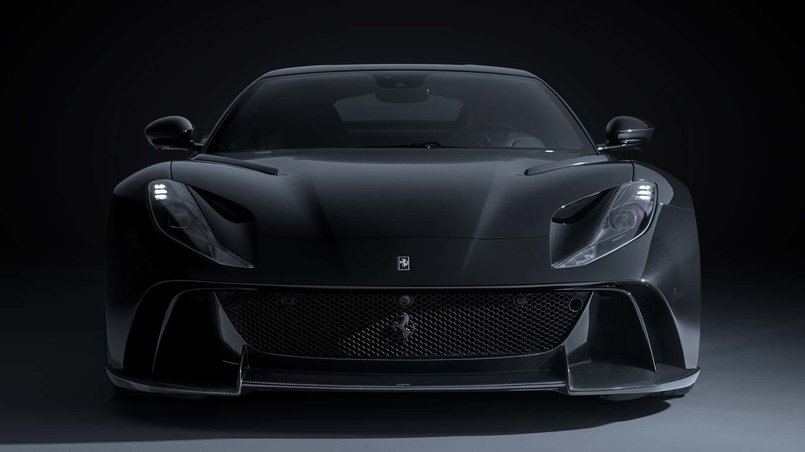
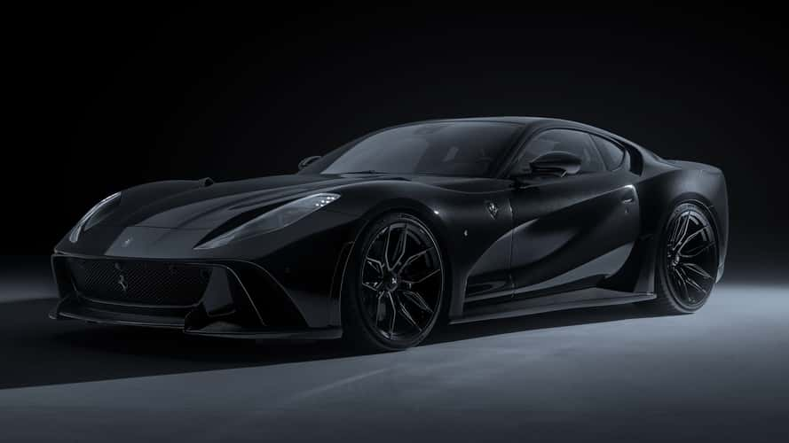
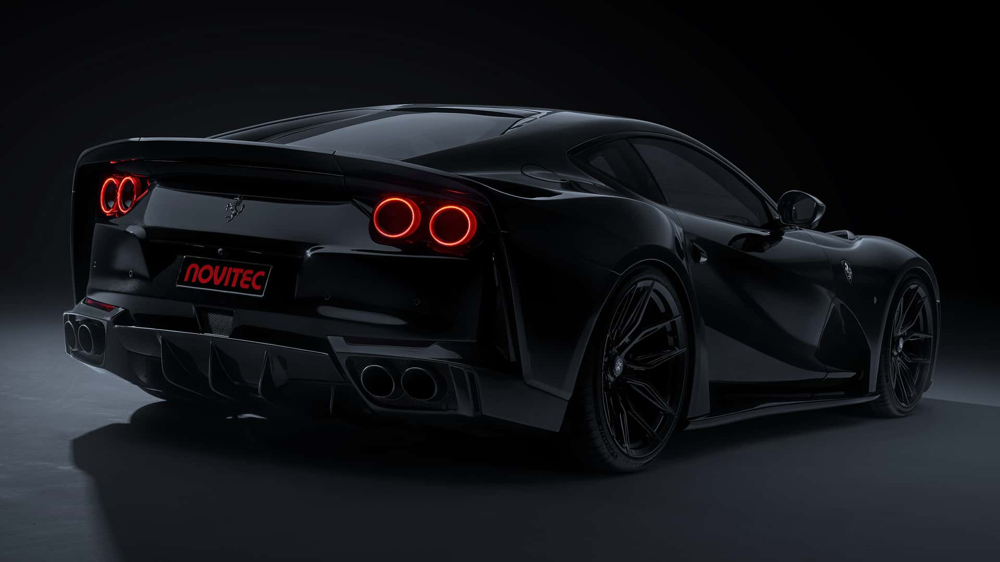
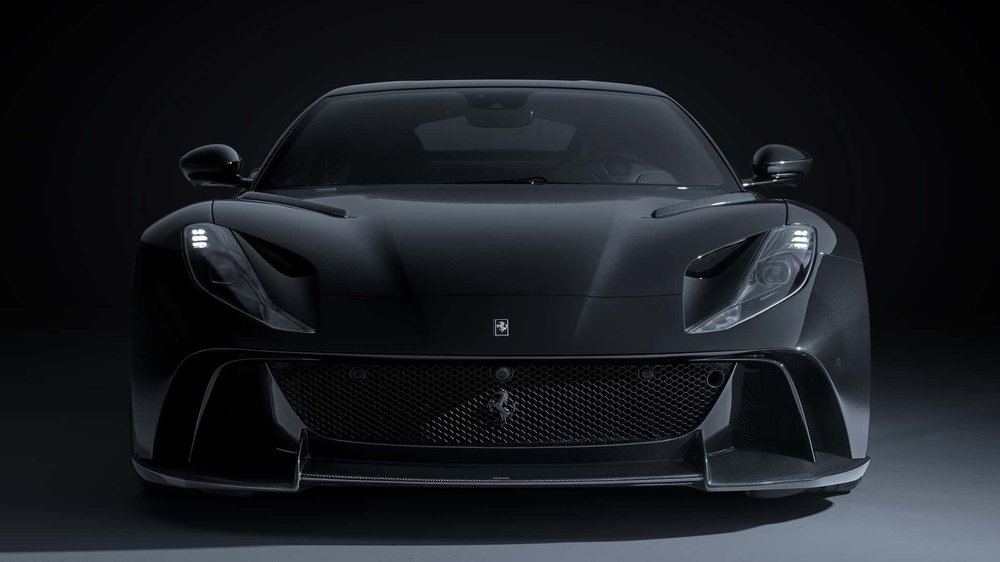
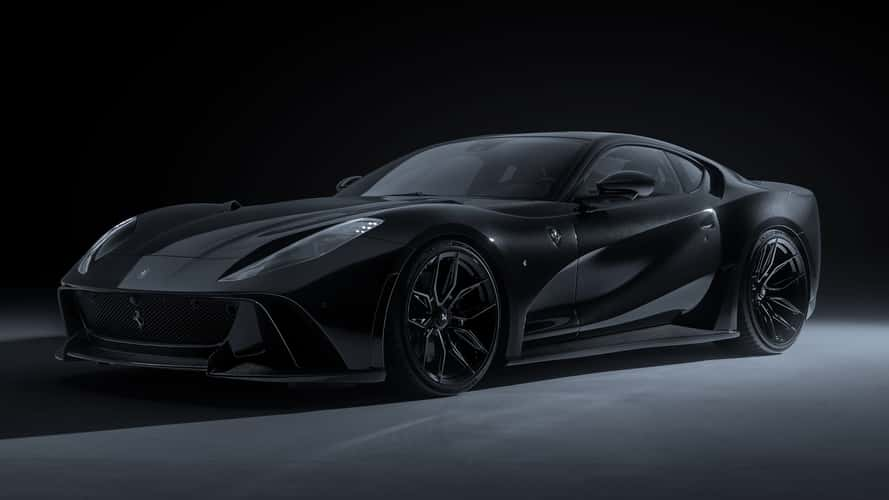
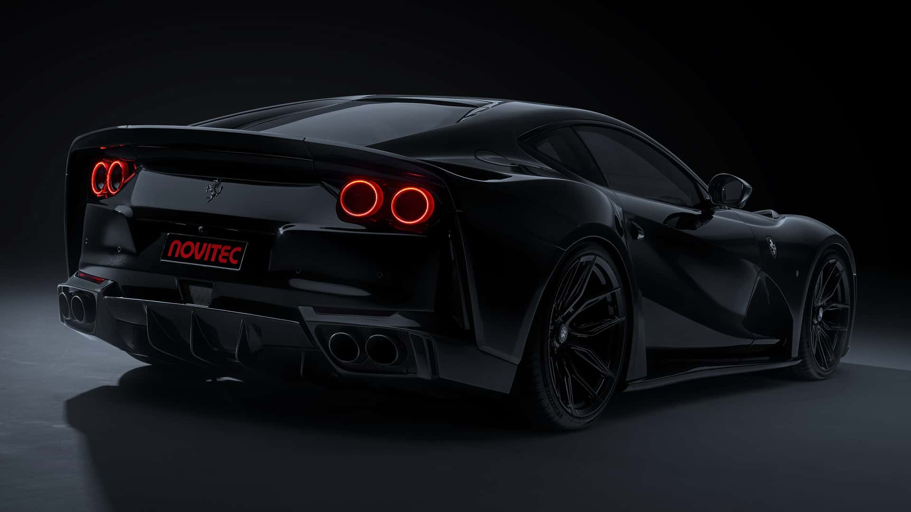

La Ferrari 812 Superfast est une supercar exceptionnelle qui incarne la quintessence de la performance italienne. Équipée d’un moteur V12 atmosphérique de 6,5 litres, elle développe une puissance impressionnante de 800 chevaux à 8 500 tr/min, ce qui en fait l’une des Ferrari les plus puissantes jamais produites. Elle atteint les 100 km/h en seulement 2,9 secondes et peut dépasser les 340 km/h en vitesse de pointe. La 812 Superfast est dotée d’une transmission automatique à double embrayage à 7 rapports et d’un système de direction intégrale (roues arrière directrices) qui améliore la maniabilité à haute vitesse comme en virage serré. Son design agressif, à la fois aérodynamique et élégant, reflète la philosophie Ferrari, tandis que l’intérieur mêle sportivité et luxe, avec des matériaux raffinés et des technologies embarquées avancées. Véritable hommage aux GT classiques de la marque, elle représente l’apogée du moteur V12 chez Ferrari.